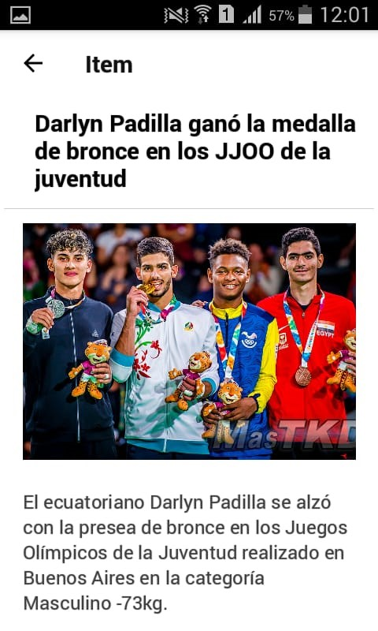

Esta es la pantalla principal, en ella podemos ver las novedades del mundo del taekwondo ordenadas desde la más reciente a la más antigua.
Si vemos una novedad que nos interesa, podemos presionarla para enterarnos más en detalle de que se trata.
Para volver a la pantalla principal se puede presionar el icono que representa una flecha para atrás que se encuentra ubicado en la pantalla superior izquierda. Si la noticia es mucho más grande que la pantalla del celular se puede desplazar la noticia para poder leerla en su totalidad.